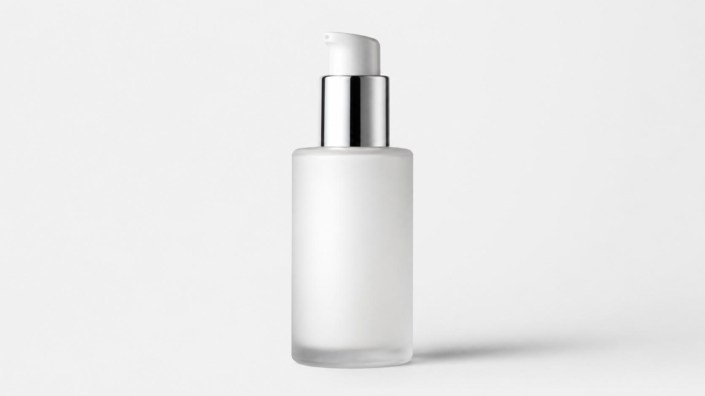

A distracting photo background can make an otherwise good picture look unprofessional. Whether you are preparing a product image for an online store, updating a profile picture, or creating a clean visual for your website, a plain white background can make the main subject stand out.
You do not always need advanced photo-editing software to make this change. An online photo editor can help you choose a new background colour and create a cleaner-looking image.
In this guide, you will learn how to change a photo background to white online, what to check before downloading your edited picture, and how to avoid common background-editing mistakes.
How to Change a Photo Background to White Online
You can use the QuickToolsPK Change Image Background Color tool to work with an image and choose a new background colour.
Follow these general steps:
- Open the online photo editor: Visit the QuickToolsPK Change Image Background Color tool.
- Upload your image: Select the photo you want to edit. The current page lists JPG, PNG and WEBP support, with a maximum file size of 20 MB.
- Choose the background colour: Use the available colour controls to select white. If the custom HEX field is available, use
#FFFFFFfor pure white. - Review the result: Check the edges around the subject, especially hair, clothing, accessories and shadows.
- Make adjustments: If the editor provides background selection or refinement controls, use them to improve areas that do not look natural.
- Download your image: Use the download option after checking the preview.
The tool page documents image upload, background colour selection, a custom HEX field and image download. The exact selection and refinement options should be checked in the live interface before publishing claims about automatic background removal or manual masking.
Try the QuickToolsPK Tool
Change the background colour of an image and review the result instantly.
Why Should You Change a Photo Background to White?
White is one of the most useful background colours in photography and graphic design. It creates a simple visual space that helps viewers focus on the main subject.
Here are some common reasons to use a white background.
1. Create cleaner product photos
Online stores often use plain backgrounds to present products clearly. A white background can help customers focus on the product rather than objects or colours behind it.
For example, you might use a white background for:
- Shoes and clothing.
- Watches and jewellery.
- Beauty and skincare products.
- Electronics and accessories.
- Home decoration products.
- Small business catalogue images.
For e-commerce, consistency matters. If several product photos use different background colours, the product catalogue may look less organised. A consistent background can create a more unified appearance.
2. Improve profile pictures
A simple white background can work well for professional profile images, team introductions, business websites and personal portfolios.
It is especially useful when the original picture contains a busy room, furniture or other distracting objects.
However, a clean background alone does not make a picture suitable for an official identity document. Always check the relevant authority's photo rules.
3. Prepare images for websites and presentations
A white background can make an image easier to place in a website layout, presentation, brochure or promotional design.
It can also help when you need to combine images from different sources into one consistent visual style.
4. Create simple marketplace images
Online sellers often prepare product images for different marketplaces and shopping platforms. A plain white background may be useful for catalogue presentation, but each marketplace has its own image requirements.
Before uploading, check the platform's current rules for image background, dimensions, borders, text and product visibility.
What Makes a Good White Background Photo?
Choosing white as a background colour is only one part of the editing process. A good result should also look natural.
Consider these details before downloading your image.
Pure white versus off-white
Pure white is represented by the HEX colour #FFFFFF. It is useful when you need a bright, neutral background.
Off-white is slightly warmer or softer. It may work better for editorial designs, portraits and images where pure white feels too harsh.
| Background | HEX example | Common use |
|---|---|---|
| Pure white | #FFFFFF | Product images and clean layouts |
| Soft white | #FAFAFA | Minimalist designs |
| Warm off-white | #F8F7F2 | Editorial and lifestyle visuals |
| Light grey | #F2F2F2 | Subtle contrast |
These are design examples, not official document-photo standards.
Clean subject edges
Pay close attention to the outline of your subject. Hair, fur, transparent glass, lace and thin accessories can be difficult to separate from a complicated background.
Zoom in and inspect:
- Hair strands around the head.
- The edges of sleeves and clothing.
- Glass bottles and transparent objects.
- Small jewellery details.
- Shadows around the subject.
- Any leftover colour from the original background.
If you notice a white halo, missing hair or a rough outline, the image may need further refinement.
Natural lighting and shadows
A completely white background can sometimes make an image look artificial if the subject has strong shadows or coloured reflections from the original scene.
For a natural result, the lighting on the subject should look consistent with the new background. Avoid making the background so bright that the subject's edges disappear.
How to Make a Product Photo Background White
Product photography is one of the most common uses for a white background.
Imagine you have a photograph of a perfume bottle on a wooden table. The table and room behind it may distract viewers from the product. A white background can create a simpler presentation.
Use this practical approach:
- Choose a sharp, well-lit product image.
- Upload it to the online background colour editor.
- Select the background area using the available controls.
- Choose white using the colour picker.
- Review the bottle's edges, cap and transparent areas.
- Check that the product's original colour and appearance remain accurate.
- Download the result and inspect it at full size.
How to Change a Photo Background to White Without Photoshop
Photoshop is a powerful editing application, but it may be more than a beginner needs for a simple background colour change.
An online image editor can be a practical alternative when you want to make a straightforward adjustment.
| Editing method | Suitable for | Considerations |
|---|---|---|
| Online background colour editor | Simple colour changes | Depends on available selection features |
| Professional desktop software | Detailed editing and masking | Requires more editing knowledge |
| Mobile photo editor | Quick edits on a phone | Controls vary by application |
| Manual selection tools | Complex edges and detailed objects | Can take more time |
USA: White Background Photos for Online Stores and Professional Use
In the United States, white-background product photography is useful for many online businesses, including independent stores, small brands and e-commerce sellers.
A clean background can help maintain a consistent product catalogue across a website. It is also useful for product presentations, promotional graphics and business portfolios.
Is a digitally edited white background acceptable for a US passport photo?
For official passport or visa photographs, check the latest instructions from the relevant government authority and take the photo according to those rules.
China: White Background Product Photos and Visa Photo Considerations
China is another relevant market for white-background photography, particularly for product catalogues, online retail and commercial image preparation.
Businesses selling products online may use consistent white-background images to present products clearly across listings and promotional materials.
White background for China visa photographs
China-related visa photo requirements should be checked against the specific instructions provided by the relevant Chinese embassy or consulate.
A published Chinese consular photo specification document describes a white or close-to-white background with no borders around the image. It also includes measurements and other photo requirements.
Common Mistakes When Changing a Photo Background to White
A white background may look simple, but poor editing can make the final image look unnatural. Avoid these common mistakes.
- Removing parts of the subject: An inaccurate selection may remove hair, clothing edges, product handles or other small details.
- Leaving the original background visible: Small patches of the old background can remain around the subject.
- Making the subject look too bright: If the subject has light-coloured clothing, it may blend into the background.
- Ignoring shadows: A background may be white while the original shadow remains dark or uneven.
- Changing the product's real appearance: Do not unintentionally change the product's colour, shape or details.
- Using an edited image for official documents without checking the rules.
What Image Format Should You Download?
The right image format depends on how you plan to use the final picture.
| Format | Useful for | Important detail |
|---|---|---|
| JPG / JPEG | Product photos, website images and everyday use | Does not support transparency |
| PNG | Graphics and images that need transparency | Can have larger file sizes |
| WEBP | Website images and web publishing | Check compatibility with your destination |
Tips for Better Background Editing Results
Before you edit your next photo, keep these practical tips in mind:
- Start with a clear, high-resolution original image.
- Use good lighting when taking the original photo.
- Avoid photographs where the subject and background have nearly identical colours.
- Check the edges around hair, fabric and transparent objects.
- Keep product colours and details accurate.
- Use consistent background colours across related product images.
- Review the exported file at full size.
- Keep a copy of the original photograph.
The quality of the final result depends on the original image and how accurately the subject can be separated from its surroundings.
Change Your Image Background with QuickToolsPK
You do not need to make every background edit complicated. For everyday image preparation, an online photo editor can help you work with different background colours and create a cleaner visual.
With the QuickToolsPK Change Image Background Color tool, you can upload a supported image, choose a background colour using the available controls, preview the result and download the edited image.
Whether you are preparing a product picture, a website graphic or a personal design, take a moment to review the final image before using it.
Frequently Asked Questions
1. How can I change a photo background to white online?
2. How do I make a picture background pure white?
#FFFFFF in an editor that supports custom HEX colours. Make sure the original background is properly selected so the subject remains visible.